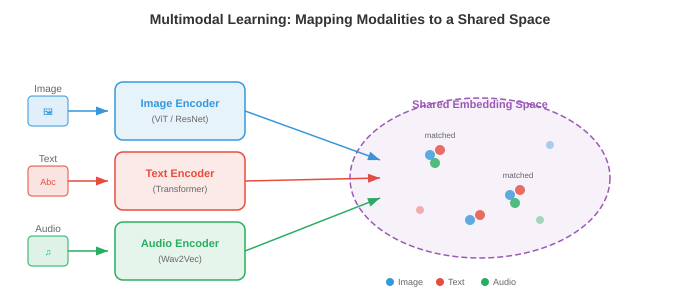
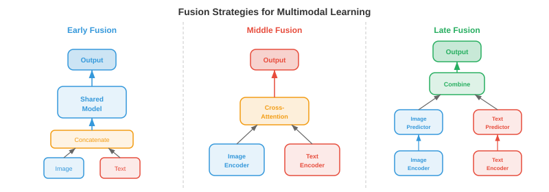
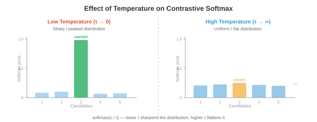
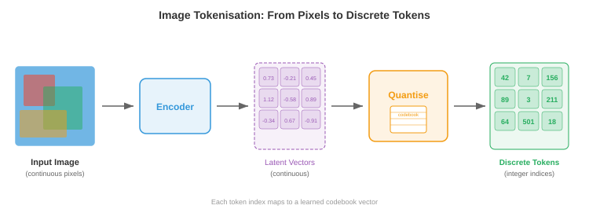

A machine is never instrumented with one sensor. You put an accelerometer on the bearing housing, a thermocouple in the oil, a pressure tap on the discharge, and you form a judgement from all three — because each one is blind to what the others see. That is multimodal learning, and you have been doing it for years.
So this chapter starts from an unusually strong position, and the risk is the opposite of the usual one. The architecture transfers almost completely: the three ways of combining modalities are the three levels of sensor fusion, under the same names, chosen for the same reasons. What does not transfer is everything that makes your version trustworthy — the observation model, the noise covariance, the innovation you can monitor, the observability test that tells you whether the fusion is even possible.
Sections 01–08 bring the modalities into a common representation: fusion strategies, contrastive alignment, and the vector quantisation that turns a picture into something a language model can read. Sections 09–12 are what gets built on top of them.
The verdict column splits unusually cleanly in this chapter: the structures are identical and the guarantees are absent. Read it with that in mind.
| What you already know | What this chapter calls it | Verdict |
|---|---|---|
| Raw-signal, feature-level and decision-level fusion | Early, middle and late fusion | The same taxonomy. Same three levels, same trade-offs. See §01. |
| Direction cosines, unit vectors (Ch 01 §03) | Cosine similarity on L2-normalised embeddings | Identical. On the unit sphere it is the dot product. See §02. |
| Boltzmann factor \(e^{-E/kT}\) | Contrastive temperature \(\tau\) | The same functional form, with \(kT\to\tau\). See §03. |
| Nearest-entry lookup in a property table | Codebook quantisation | Identical operation, and it is Chapter 06’s k-means assignment. See §05. |
| Successive-approximation ADC | Residual quantisation | The same algorithm, including the condition it needs to converge. See §06. |
| Line balancing, idle stations (Ch 07 §08) | Codebook collapse | The same failure and the same fix. See §07. |
| Separable filters, low-rank updates (Ch 08 §01) | Product quantisation | The same factorisation argument. Exponential reach, linear storage. See §06. |
| Causal filtering (Ch 09 §14) | Causal video tokenisers | Identical constraint, for identical reasons. See §08. |
| Quantisation error, ADC resolution (Ch 09 §03) | Reconstruction error of a tokeniser | The same quantity. See §05. |
| Calibrating two instruments to one scale | Joint embedding space | Structure yes, traceability no. There is no reference standard. See §02. |
| Kalman filter: observation model and covariance | Learned cross-modal alignment | Absent. No \(H\), no \(R\), no innovation to monitor. See §09. |
| Observability — can this state be recovered? | — nothing — | No counterpart. There is no test for whether alignment is possible. See §09. |
| A differentiable model you can linearise | The straight-through estimator | Deliberately false. The gradient is of a different function. See §05. |

The source offers an analogy about a group project. You do not need it. There are three places you can combine information from several sources, and the field has independently arrived at the same three, with the same names.
Early fusion concatenates the raw or low-level features and processes them together: \(x_{\text{fused}}=[x_1;x_2]\). Late fusion runs each modality to a decision and combines the decisions, \(\hat y=\alpha\hat y_1+(1-\alpha)\hat y_2\). Middle fusion encodes each modality separately, then couples the representations partway through, usually by cross-attention.
Multi-sensor data fusion has classified exactly this way for decades: raw-data-level, feature-level and decision-level fusion. Early is raw-data level, middle is feature level, late is decision level. The correspondence is not approximate; it is the same taxonomy arrived at twice.
And the trade-offs are the ones you would predict. Raw-level fusion sees every interaction between the channels but needs them commensurable, synchronised and co-registered, and it is expensive. Decision-level fusion is cheap, lets you reuse instruments you already trust, and survives one channel dropping out — but it cannot see a correlation that only shows up in the raw signals, because by the time the channels meet, each has already thrown away everything except its own verdict. If you have ever argued about whether to combine vibration and temperature at the signal level or just take two independent diagnoses and vote, you have had this exact argument.
Your fusion has a model. When you combine an accelerometer and a gyroscope you write an observation model \(z=Hx+v\) that says how each sensor sees the state, and a covariance \(R\) that says how much to trust each one. The Kalman gain follows from those two, and the weighting is derived, not fitted. You can monitor the innovation, and if it stops looking like noise you know the model is wrong. You can run an observability test beforehand and find out whether the state is recoverable from these sensors at all.
None of that exists here. There is no state being estimated, so there is no \(H\) and no \(R\); the mixing weight \(\alpha\) in late fusion is fitted, not derived. There is no innovation sequence, so there is no online check that the fusion is still valid. And there is no observability criterion — nothing tells you in advance whether a caption and an image can be aligned, only whether the loss went down. The architecture transfers completely. Every guarantee attached to it stays behind.

Middle fusion needs the two representations to be comparable. That is what a joint embedding space is: two encoders, \(f\) for images and \(g\) for text, trained so that matched pairs land near each other in one \(d\)-dimensional space. Once they do, an image and a caption become the same kind of thing and you can measure the distance between them.
The measure is cosine similarity, and after \(L_2\)-normalisation it is just the dot product — which is Chapter 01 §03 exactly, and checked here to \(10^{-16}\):
Every embedding sits on the unit hypersphere, so only direction carries meaning. Magnitude has been normalised away deliberately — the same move as working with direction cosines rather than components.
A thermocouple produces millivolts and an infrared pyrometer produces a radiance. Neither reading is comparable to the other until both are mapped onto a common scale, and once they are, you can ask whether they agree. That mapping is exactly what \(f\) and \(g\) do. The joint embedding space is the shared scale, and cosine similarity is the comparison it makes possible. Zero-shot classification then follows without any new machinery: describe the classes in text, embed them, and read off which one the image is nearest — the text encoder has become a classifier head you can reprogramme by typing.
Calibration is traceable. Your thermocouple is checked against a reference that is checked against a national standard that terminates in a definition of the kelvin, and the whole chain exists so that “300 K” means the same thing in two different laboratories.
A joint embedding space has no such terminus. It is defined entirely by which pairs appeared together in the training data, so the “scale” is a consensus of the corpus rather than a reference. Two CLIP models trained on different data produce embedding spaces that are not comparable at all — there is no conversion between them, because there is no quantity underneath that both are measuring. A cosine similarity of 0.8 is not a physical statement. It is a statement about one particular model’s training set, and it does not travel.

How do you train \(f\) and \(g\) to agree? Take a batch of \(N\) matched pairs, compute all \(N^2\) similarities, and note that the correct answers are exactly the diagonal. Then train the diagonal up and the off-diagonal down. That is CLIP, and the loss is an ordinary cross-entropy over each row:
with the symmetric term for text-to-image, averaged. Each row is an \(N\)-way multiple-choice question: which of these captions goes with this image? Getting it right requires understanding both sides, which is the entire trick.
The source reaches for a physical analogy here — molecules moving randomly at high temperature, settling into rigid structures at low. That analogy is usually where this page would add a caution. Not this time: the correspondence is exact as a functional form. Write the softmax out and set \(E=-\text{sim}\):
It is the Boltzmann distribution, with \(\tau\) standing where \(kT\) stands. Every
instinct you have about it holds: as \(\tau\to0\) the distribution collapses onto the
single lowest-energy state, so only the hardest negative matters and the gradient is
enormous; as \(\tau\to\infty\) it flattens to uniform and the loss stops distinguishing
anything. Both limits are checked in verify_claims.py. CLIP initialises
\(\tau=0.07\) and learns it, which is a system choosing its own annealing
schedule.
The functional form is identical. Nothing else is. There is no energy, no heat bath, no equilibrium and no physical temperature — \(\tau\) has units of inverse similarity, which is to say no units at all, and it is fitted by gradient descent. This is the same boundary Chapter 07 drew around Shannon entropy against thermodynamic entropy: a shared functional form is a real and useful fact, and it is not a shared mechanism. The safe statement is “softmax is a Boltzmann distribution”, which is true. The unsafe one is anything that follows about the system from thermodynamics.
You lower the temperature \(\tau\) towards zero in a contrastive loss. What happens to which negatives the model learns from?
on the diagonal
negatives
per row
share of mass
InfoNCE is a \((K{+}1)\)-way classification, and it is a lower bound on the mutual information between the two views, capped at \(\log(K{+}1)\). With 7 negatives the ceiling is 3 bits; with 32,767 it is 15 bits. So the batch size is not a tuning convenience — it sets how much information the objective is even capable of extracting. This is why contrastive training pushes batch sizes to tens of thousands, and why SigLIP’s per-pair sigmoid loss mattered: it removes the global softmax, and with it the all-to-all communication that made those batch sizes a distributed-systems problem.


Once the space is shared, both headline capabilities are nearest-neighbour search and nothing more. Zero-shot classification embeds \(K\) class names as text and takes \(\hat y=\arg\max_k\text{sim}(f(x),g(t_k))\). Retrieval ranks a catalogue by similarity to a query. The metric is Recall@K — the fraction of queries whose correct match appears in the top \(K\) — with median rank as a companion.
R@1, R@5 and R@10 are three points on one curve, chosen because they match how the result gets used: R@1 for an automatic decision, R@10 for a shortlist a person will scan. This is the same reasoning as choosing an operating point on an ROC curve in Chapter 06 §08, or an acceptance number in a sampling plan in Chapter 04. A single reported R@1 tells you as little as a single reported accuracy, and for the same reason.
Prompt sensitivity is large. The source reports CLIP’s ImageNet zero-shot accuracy rising from 63.2% to 68.4% purely by changing the template from “{class}” to “a photo of a {class}”. Take that seriously: five points of accuracy from rephrasing the question means the measurement is not only of the model. An instrument whose reading moved that much when you reworded the request would not be considered calibrated. These figures are reported from the source and are not independently checked here.
Contrastive models match bags of words. Benchmarks built to test composition — Winoground, ARO — ask whether a model can tell “a mug in a dog” from “a dog in a mug”, and CLIP-style models do poorly. The training objective rewards matching an image to the right caption within a batch, and word order rarely helps with that, so the model is never pushed to represent it. High R@1 with poor compositional performance is not a contradiction; it is what the objective asked for.

A transformer predicts the next symbol from a finite vocabulary. Text already comes as symbols; an image does not. A \(256\times256\) image is 65,536 pixels, and the job of a tokeniser is to turn it into a short sequence of integers — typically a \(16\times16\) grid, so 256 tokens, a 256-fold reduction.
The mechanism is vector quantisation. An encoder produces a grid of continuous vectors; each is replaced by the nearest entry of a learned codebook \(\mathcal{C}=\{e_1,\dots,e_K\}\), and the index of that entry is the token:
It is a lookup table. You have a continuous measured value and a finite table of entries, and you take the nearest row. That is what you do with steam tables, with a materials database, with any property table — and the error you accept is the table’s granularity.
It is Chapter 09 §03 in higher dimensions. Sampling discretised time, quantisation discretised amplitude, and the rounding error had variance \(\Delta^2/12\). This is the same operation with the scalar replaced by a vector and the uniform grid replaced by a learned set of points. A tokeniser’s reconstruction error is quantisation error.
It is Chapter 06 §02. Assigning each point to its nearest codebook entry is precisely the k-means assignment step, and the codebook update — move each entry to the mean of the vectors assigned to it — is precisely the k-means update step. The source says the EMA version is “equivalent to running online k-means”, and it is right. So the codebook minimises the summed squared distance of the encoder outputs from their assigned entries, which is the total second moment about the cluster centres: a moment of inertia, exactly as in Chapter 06.
One step does not survive the crossing, and it is worth naming plainly.
\(\arg\min\) has zero gradient almost everywhere, so backpropagation through the quantiser would deliver nothing to the encoder. VQ-VAE’s solution is to write
which evaluates to \(z_q\) going forward and to the identity coming back. The backward pass is computing the gradient of a different function from the one the forward pass evaluated, on purpose. There is no engineering analogue for this. You linearise a model about an operating point and the linearisation is an approximation that converges as the perturbation shrinks; this does not converge to anything, because the true derivative it is standing in for is zero. It is a device that works, is known to work, and is not justified by any limit argument. Treat it as a fact about the field rather than something to make sense of.
VQ-GAN adds a patch discriminator and a perceptual loss on top, because a plain \(\ell_2\) reconstruction penalty averages over plausible details and produces blur — the same reason Chapter 08 §07 preferred a loss that yields to one that does not.


One codebook puts a hard floor under reconstruction quality: every position gets exactly one entry, and anything finer is lost. The fix is the one you would reach for, and it is the same algorithm as the converter in your data-acquisition card.
Residual quantisation quantises, subtracts, and quantises what is left:
with the final representation \(\hat z=\sum_t z_q^{(t)}\). The first codebook gets the coarse structure, the second corrects it, the third corrects that.
A SAR converter finds a voltage by bisection: compare against half the range, keep or discard that bit, then compare the remainder against a quarter, then an eighth. Each step quantises the residual left by the step before, and \(n\) comparisons give \(n\) bits. Residual quantisation is that algorithm with a scalar comparison replaced by a nearest-entry lookup in \(d\) dimensions.
The accounting is the same too. \(T\) stages of a \(K\)-entry codebook reach \(K^T\) distinct representations while storing only \(T\times K\) vectors — eight stages of 1,024 entries give \(1.2\times10^{24}\) combinations from 8,192 stored vectors. That is the separability argument of Chapter 08 §01 and the low-rank argument of Chapter 07 §08 once more: exponential reach, linear storage, because the representation factorises. Product quantisation makes the same trade by splitting the vector instead of the residual.
The source calls this “analogous to successive approximation” and moves on. Building it showed that the analogy carries a requirement, and that without it the method does not work at all.
Run eight stages with codebooks of a fixed scale and the error does not converge. It falls for a few stages, stalls at about 82% of the original, and then goes up — because once the residual is smaller than the codebook vectors themselves, the nearest entry is farther away than zero, and adding it makes things worse. Fit each stage’s codebook to the residual it actually has to quantise and the error falls monotonically to 16% of the original, a sixfold reduction over the same eight stages:
| Codebook policy | Stage 0 | 2 | 4 | 6 | 8 | Monotone? |
|---|---|---|---|---|---|---|
| Fixed scale | 0.986 | 0.857 | 0.811 | 0.842 | 0.807 | no |
| Scale-matched | 0.986 | 0.826 | 0.686 | 0.593 | 0.500 | yes |
| Fitted per stage | 0.986 | 0.621 | 0.393 | 0.249 | 0.159 | yes |
This is exactly why a SAR converter halves its test voltage at every bit rather than using the same step throughout. A fixed step stops resolving as soon as the remainder drops below it; the ladder has to shrink with the residual. The analogy is not decorative — it predicts the failure mode, which is the test §12 of Chapter 08 proposed for whether a bridge is load-bearing.
With each stage fitted, the per-stage error ratio comes out between 0.793 and 0.799 — constant to within 1%. So the error falls as \(\rho^{T}\) and \(\log(\text{error})\) is linear in the number of stages. That is precisely the statement that each stage buys a fixed number of bits, and it is why a converter is specified in bits rather than in volts: every additional stage divides the remaining uncertainty by the same factor.
You run eight rounds of residual quantisation, but every round uses a codebook of the same fixed scale. What does the reconstruction error do?
per stage
scale
reachable
stored
position

The standard failure of a learned codebook is that most of it goes unused. An entry that is not selected for a while drifts away from where the encoder puts things, which makes it even less likely to be selected, which lets it drift further. The source calls this codebook collapse and names it a positive feedback loop, which is exactly right.
Chapter 07 §08 had the identical problem under a different name. A mixture-of-experts router that sends most tokens to a few popular experts leaves the rest idle; the fix was an auxiliary load-balancing loss pushing utilisation towards uniform, and DeepSeek’s preferred alternative was a per-expert bias nudged by observed load — feedback control on the queue rather than a penalty in the objective.
Every remedy the source lists for codebook collapse is one of those two moves. Entropy regularisation is the load-balancing loss verbatim, penalising departure from uniform usage. Codebook reset — reinitialise dead entries onto recent encoder outputs — is re-siting an idle station where the work actually is. Laplace smoothing on the usage counts guarantees every entry keeps a trickle of signal, which is a minimum-flow constraint. And factorised codes attack it structurally, by shrinking the effective codebook each lookup must populate.
Utilisation has a natural measurement, and it is one you have now met three times. Let \(p_k\) be the fraction of assignments landing on entry \(k\); the usage perplexity \(e^{H}\) with \(H=-\sum_k p_k\log p_k\) is the effective number of entries in play. A uniformly used codebook of \(K\) entries scores exactly \(K\).
| Codebook | Usage perplexity | Effectively utilised |
|---|---|---|
| Healthy — uniform usage | 64.00 | 100.0% |
| Skewed — 8 entries carry 92% | 12.27 | 19.2% |
| Collapsed — one entry carries 99% | 1.10 | 1.7% |
Finite scalar quantisation sidesteps the problem rather than managing it: drop the learned codebook entirely and round each latent dimension to one of a few fixed integer levels. With \(L\) levels over \(d\) dimensions the implicit codebook is \(L^d\) — 15,625 for five levels over six dimensions — and no entry can die, because no entry was ever learned. It is the difference between balancing a line and redesigning it so the imbalance cannot occur.

Video adds a time axis, and adjacent frames are enormously redundant. A 3D VQ-VAE replaces 2D convolutions with 3D ones and compresses space and time together. With spatial factor 16 and temporal factor 4, sixteen frames of \(256\times256\) become \(4\times16\times16=1{,}024\) tokens — against 3,145,728 raw values, a compression of 3,072×.
An ordinary 3D convolution looks at past, present and future frames, so you must have the whole clip before you can tokenise any of it. A causal video tokeniser pads the temporal kernel asymmetrically — \(k-1\) zeros on the past side, none on the future side — so each output depends only on the current frame and earlier ones.
That is Chapter 09 §14 unchanged, and the two reasons the source gives are the two reasons from that section. Streaming: you cannot buffer frames that have not arrived, which is why a controller is causal. Autoregressive generation: the tokens for frame \(t\) must be computable without frame \(t+1\), because frame \(t+1\) does not exist yet. The elegant consequence the source notes — that a causal tokeniser handles a still image as a one-frame video with no special case — follows directly: with no past to look at, the first frame is encoded from itself alone.
Factorised compression splits the job — a 2D encoder per frame, then a 1D encoder across time — which is cheaper than full 3D convolution and lets you set the two ratios independently. That is the separability argument again, now over the time axis. And temporal interpolation tokens, which encode keyframes fully and intermediate frames as morphing instructions, are I-frames and P-frames from H.264 rebuilt in a learned latent space.
Quantisation costs fidelity, so why quantise at all? Only because of what reads the tokens. An autoregressive transformer predicts from a finite vocabulary with a softmax and cross-entropy, so it requires discrete symbols. A diffusion or flow-matching model works natively in continuous space and is better off without the quantisation error. This is the same question as choosing the resolution of a DAQ channel: the answer is set by what happens downstream, not by the signal. The honest framing is that discretisation is a cost paid to access the language-model machinery — and that is also the whole argument for paying it, since that machinery is what Chapter 07 spent a chapter describing.

A vision-language model has to get an image into a machine built for token sequences. The pipeline is five steps, and only one of them is new.
- Patch extraction. Cut the image into \(P\times P\) patches. At 336 px with 14 px patches that is \((336/14)^2=576\) patches.
- Vision encoding. Run them through a ViT (Chapter 08 §08) to get contextual patch embeddings.
- Token compression (optional). Reduce \(N\) patches to \(M\ll N\) tokens.
- Projection. A linear map or small MLP into the language model’s embedding dimension.
- Injection. Splice the projected tokens into the sequence and let ordinary self-attention do the rest.
LLaVA’s contribution was to show that step 3 is optional and step 4 can be a single linear layer: project CLIP patch features, concatenate with the text embeddings, and the language model treats them as foreign words. No cross-attention, no resampler.
Attention costs \(O(N^2)\), so the token count is not a detail. Flamingo’s Perceiver Resampler squeezes 576 patches to 64 learned queries: nine times fewer tokens and 81 times fewer pair interactions. Qwen-VL does the same to 256, BLIP-2 with a Q-Former.
That is static condensation. In a large finite element model you nominate a small set of master degrees of freedom and condense the rest onto them, because the solve cost grows far faster than linearly in the DOF count and most of those DOFs carry little independent information. Guyan reduction picks the masters by hand; the Perceiver learns them. Both are betting that the retained set spans what matters, and both are wrong in the same way when it does not — which is exactly why high-resolution document and OCR tasks forced the field towards more visual tokens and dynamic resolution rather than fewer.
Flamingo keeps the vision encoder and the language model frozen and learns only the connection, through gated cross-attention layers inserted between the frozen blocks:
At \(\alpha=0\) the new path contributes exactly nothing and the model is bit-for-bit the original language model; the gate then opens under training. That is how you commission a new control loop on a running plant. You do not close the loop at full gain and hope — you bring it in at zero and ramp, so the transfer is bumpless and the existing system is never disturbed by a step change. The reason is the same in both cases: the incumbent works, and the risk is not that the addition is useless but that it destabilises what already works.
A dual encoder embeds image and text separately, so you can compute every image embedding once and store it; retrieval over a million images is then a matrix product. A fusion encoder couples them with cross-attention, which is far more expressive and means every image-text pair needs its own forward pass — nothing can be cached. That is the influence-coefficient trade of Chapter 07 §05: a flexibility matrix is computed once and reused for every load case precisely because it does not depend on the load, and the moment your analysis becomes load-dependent you lose that and must re-solve per case. Same structure, same cost consequence, same reason.
To make a language model point at things, discretise the image into (say) 1,000 bins per
axis and add tokens <loc_0>…<loc_999> to the
vocabulary. The model then emits a box as four ordinary tokens. No architecture change at
all — it simply learns to speak coordinates. This is §05’s quantisation
applied to geometry, and Chapter 09 §03’s amplitude quantisation applied to
position.
The assumption worth naming: the bins are a nominal vocabulary as far as the
model is concerned. Nothing in the architecture knows that <loc_500>
lies between <loc_499> and <loc_501>, or that being
wrong by one bin is a small error and being wrong by four hundred is a large one. Ordinal
structure has to be learned from data rather than being built in, and the cross-entropy
loss treats every wrong bin as equally wrong. You would never dimension a drawing with a
scale whose intervals had no defined ordering; this does, and it works anyway, which is
worth finding surprising.
VQA v1 turned out to be answerable without looking at the image: say “2” to “how many” and “yes” to “is there” and you score respectably. The model had learned the marginal distribution of answers, not the conditional. VQA v2’s remedy is to pair every question with two similar images that have different answers, so the question carries no information on its own. That is blocking: hold the factor you do not want to measure constant, vary only the one you do. The lesson generalises past this dataset — if a benchmark can be beaten without the input you care about, it is measuring something else, and no amount of accuracy on it means what you think.


There are two ways to make an image from a sentence, and the chapter covers both. DALL-E tokenises the image (§05) and predicts the tokens autoregressively, which reuses the whole of Chapter 07 unchanged — and inherits its cost, 1,024 sequential steps per picture. Stable Diffusion instead denoises in a compressed latent space, with a U-Net that cross-attends to the text embedding at every step. Chapter 08 §06 already identified that U-Net as a multigrid V-cycle and §09 identified the reverse process as transport along a learned velocity field; neither needs restating.
One thing does. Classifier-free guidance is what makes these models actually obey the prompt, and it is not a neural-network idea at all.
Rearrange it. Writing \(\epsilon_u\) for the unconditional prediction and \(\epsilon_c\) for the conditional:
which is a relaxation between two estimates, and identical to the CFG form to \(4\times10^{-16}\). At \(s=0\) you get the unconditional prediction, at \(s=1\) exactly the conditional one. Everything interesting happens at \(s>1\), where the weights become \((1-s)<0\) and \(s>1\) — you are no longer interpolating between the two predictions, you are extrapolating past the conditional one, along the line from unconditional to conditional. Stable Diffusion’s default \(s=7.5\) takes a step 7.5 times the length of the correction the model actually computed.
You have done this deliberately before. Successive over-relaxation takes the update a Gauss–Seidel sweep hands you and applies \(x\leftarrow x+\omega(x_{\text{new}}-x)\) with \(\omega>1\), overshooting on the reasoning that the computed correction is systematically in the right direction but systematically too small. The algebra is the same, the justification is the same, and so is the failure mode: too much relaxation and the iteration stops being stable and starts ringing. In CFG that shows up as the oversaturated, high-contrast, repetitive look of images generated at \(s=20\), and Imagen’s “dynamic thresholding” is a limiter bolted on to keep an over-relaxed update inside the valid range.
SOR has a theory. For a linear system you can compute the optimal \(\omega\) from the spectral radius of the Jacobi iteration matrix, and you can prove divergence for \(\omega\ge2\). None of that exists here: \(s=7.5\) is a number people settled on, there is no operator whose spectrum you could examine, and the “correct” value depends on whether you want a faithful illustration or an interesting one. The structure is over-relaxation exactly. The selection rule for \(\omega\), which is the part of SOR that took a decade of numerical analysis to work out, has no counterpart.
Video adds temporal coherence, and the dominant approach is the one an engineer would pick: keep the spatial model you already trained on billions of images and add temporal layers, so appearance comes from the image prior and motion is learned separately. Sora’s spacetime patches drop that separation and treat the video as a native 3D signal, which is the same choice as full 3D convolution against the factorised space-then-time encoding of §08.
A guidance scale of \(s=7.5\) is standard. What is the model’s prediction at that setting, relative to what it computed for the prompt?
unconditional
conditional
÷ correction

There is no reference image to compare against, so the standard metric compares distributions. Push a set of real images and a set of generated ones through a fixed network, collect the penultimate-layer activations, fit a Gaussian to each, and measure the distance between the two Gaussians. That is the Fréchet Inception Distance:
Read what the formula uses. A mean and a covariance. Those are Chapter 04 §10’s centroid and second moment about it, which that chapter identified with the centroid and the inertia tensor of a section. FID compares two clouds of points by asking where each sits and how it is spread — first moment and second moment — and the trace makes the second-moment term a tensor invariant, independent of the coordinate frame, exactly as \(I_1\) is.
The checks bear the reading out. With equal covariances FID collapses to \(\|\mu_r-\mu_g\|^2\), a pure centroid distance. In one dimension it is \((\mu_1-\mu_2)^2+(\sigma_1-\sigma_2)^2\) exactly. It is zero for identical distributions and symmetric in its arguments. It is the Wasserstein-2 distance between two Gaussians, which is why it has those properties and why it deserves the word “distance”.
It is biased at finite sample size, badly. Measuring a sample against the distribution it was drawn from should give zero. It does not:
| Sample size | 500 | 2,000 | 10,000 | 40,000 | 160,000 |
|---|---|---|---|---|---|
| Measured FID | 0.639 | 0.082 | 0.017 | 0.0035 | 0.0008 |
The bias falls with \(N\) but is never zero, so an FID of 8 computed on 10,000 samples and an FID of 8 computed on 50,000 are not the same claim. That is why the field fixes \(N=50{,}000\) by convention — the convention is doing real work, and a paper that quietly uses a different \(N\) is not comparable.
The feature space is arbitrary. “Inception” in the name is a specific network trained on a specific dataset in 2015. FID measures distance in its activations, so the metric inherits whatever that network happens to be sensitive to. There is nothing physical underneath, and this is §02’s traceability problem arriving in a new place.
It assumes the features are Gaussian. They are not. Fitting a mean and a covariance to a distribution with any real structure discards everything above the second moment — Chapter 04 §10 computed skewness and kurtosis precisely because two distributions can share a mean and variance and look nothing alike. FID cannot see that difference by construction.
CLIPScore takes the other route: cosine similarity between the CLIP embedding of the generated image and of the prompt. It needs no reference image, which is its appeal, and it inherits every limitation of §02 — including that a model optimised against CLIPScore is being optimised against one particular model’s idea of similarity.

The argument for a single model is combinatorial. Maintaining a specialist for every ordered pair of modalities needs up to \(k(k-1)\) pipelines: 30 of them for six modalities, 90 for ten. One model with thin per-modality adapters replaces all of them, and anything learned in one modality is available to the others.
The architecture is what §01 would have predicted: modality-specific encoders, a shared transformer backbone, modality-specific decoders. A modality embedding \(e_m\) is added to every token so the backbone knows which channel it came from — the same device as a positional embedding, and the same device as tagging every reading in a datalogger with its channel ID.
The training recipe is the part worth transferring, because it is one you already follow.
| Stage | What is trained | The commissioning step |
|---|---|---|
| 1 — Unimodal pretraining | Each encoder alone, on its own data | Bench-test and characterise every instrument on its own, before it goes near the plant. |
| 2 — Cross-modal alignment | The connectors, with encoders frozen | Loop checks. Confirm each instrument reads correctly into the system, one channel at a time, with nothing else running. |
| 3 — Joint pretraining | Everything, on mixed data | Run the assembled system, all channels live. |
| 4 — Instruction tuning | Behaviour on curated tasks | Tune it for the duty it will actually perform. |
The source asks why you cannot skip to stage 3 and train everything at once. Its answer is that the model must learn low-level features and cross-modal reasoning at the same time, and that the modality with the most data dominates. Both are true, and there is a cleaner way to say it that you already believe: you cannot diagnose a fault in a coupled system you never characterised uncoupled. If you commission everything simultaneously and the result is wrong, nothing in the result tells you which subsystem is at fault. Staging is not primarily about optimisation. It is about keeping the failure attributable.
The source notes that if one modality — usually text, which has by far the most data — dominates the gradient, the model can effectively stop using the others. That is the load-balancing failure of §07 and Chapter 07 §08 for the third time, now across modalities rather than across codebook entries or experts, and the remedies are the same family: reweight the loss, warm up the weaker channels, control the data mixing ratio. It is worth noticing how often this pattern recurs. Any system with a shared resource and unequal demand will starve something, and the fix is always either a penalty on imbalance or a controller on the queue.

Where it breaks
beyond the chapterThis chapter's bridges are structurally strong and epistemically weak, which is an unusual combination and worth being precise about.
Stated once more because it is the one that matters. Kalman fusion is derived from an observation model and a noise covariance; the weighting is a consequence, the innovation is monitorable, and observability tells you in advance whether the job is possible. Learned fusion has none of these. It has a loss that went down on a validation set. Both are called fusion and both combine sensors, and only one of them can tell you when it has stopped working.
A cosine similarity of 0.8 has no interpretation outside the model that produced it. Two models trained on different corpora produce incomparable spaces with no conversion between them, because there is no underlying quantity both are measuring. Treat a similarity as a ranking device, which is what retrieval uses it for, and not as a reading.
The straight-through estimator computes the derivative of a function other than the one evaluated, because the true derivative is zero. It is not an approximation that improves in a limit. Every intuition you have about linearisation, about step size, about convergence of a numerical derivative, is inapplicable — not wrong, inapplicable.
§03 identified the contrastive softmax with the Boltzmann distribution, and that identification is exact as algebra. It licenses the limiting behaviour in \(\tau\) and nothing else. There is no energy, no heat bath, no equilibrium, and no physical temperature. This sheet states the correspondence because it genuinely helps — and marks its edge for the same reason Chapter 07 marked the edge around Shannon entropy.
CLIP, ALIGN, SigLIP, ImageBind, Chameleon, Gemini, Cosmos, LlamaGen, and the quoted accuracy and codebook figures, were current when the source was written. The durable content of part 1 is narrower and will outlast all of them: the three fusion levels, cosine similarity on a shared sphere, the temperature limit, nearest-entry quantisation and its k-means identity, successive approximation with its scale-matching condition, and usage perplexity as the diagnostic for collapse. Everything in this list is arithmetic or architecture. None of it depends on which laboratory is ahead this year.
Worked example: reading a gauge from a photograph
beyond the chapterYou have ten thousand photographs of analogue pressure gauges taken by technicians on rounds, and you want the readings as numbers. Work it as instrumentation, then as a multimodal ML problem, and notice where the two part company.
As instrumentation
You would not do this. You would fit a transmitter and read the pressure electrically, and if you had to work from images you would fix the camera, control the lighting, calibrate the geometry once, and then it is a pointer-angle measurement with a stated uncertainty: needle angle to pressure through a known scale, with error terms you can enumerate — parallax, lens distortion, quantisation of the pixel grid.
As a multimodal model
Photographs are hand-held, lighting varies, gauges differ. The pipeline is §09: patch the image, encode with a ViT, project, and prompt a language model with “what does this gauge read?”. Grounding via coordinate tokens (§09) can return the needle tip. Fine-tuning needs labelled examples; §02’s zero-shot route gets you a baseline with none.
The second approach will work, in the sense of producing plausible numbers most of the time. Here is what it cannot do, and each item is a bridge from part 1 failing in a way that matters:
- No uncertainty. The instrument version gives you a reading and a bound. The
model gives you a token sequence. The softmax probability over
<loc_>tokens is not a measurement uncertainty and must not be reported as one — §11’s point about proxies, applied where it costs money. - No traceability. §02: there is no reference standard, so “the model is confident” is a statement about training data, not about the gauge.
- No observability test. §01 break 1: nothing tells you in advance whether the reading is recoverable from a given photograph. A Kalman filter would refuse an unobservable state; this returns an answer regardless.
- No innovation to monitor. If the gauges are replaced with a different dial face, the model degrades silently. There is no residual that goes non-white to warn you.
- Ordinal structure is not built in. §09: being wrong by one coordinate bin and wrong by four hundred are the same event to the loss.
None of this makes the approach wrong. It makes it the right tool for a job the instrument version cannot do at all — ten thousand uncontrolled photographs that already exist — while being the wrong tool for anything where the number carries consequence. The honest framing is that you have traded a measurement for an estimate, and the trade is worth making exactly when you could not have had the measurement.
Use the model as a screen, not an instrument. Let it read all ten thousand, flag the ones outside an expected band, and send those to a person. You have then built an acceptance-sampling scheme (Chapter 04) in which the model is a cheap, imperfect gauge and the human is the reference — and the quantity you must characterise is not its accuracy but its false-negative rate on the readings you cannot afford to miss. That is a question you know how to ask, and it is the right one.
Question bank
beyond the chapterTwenty-four prompts across both parts, in three tiers. Answer before opening anything.
Tier 1 — recall
R1Name the three fusion levels and the engineering terms they correspond to.
R2What does cosine similarity reduce to on \(L_2\)-normalised embeddings, and why does that matter?
R3Write the contrastive softmax and say what \(\tau\) corresponds to physically.
R4What are the two limits of \(\tau\)?
R5What operation is codebook quantisation, in Chapter 06's terms?
R6State the residual quantisation recursion and its storage advantage.
R7How do you measure codebook collapse?
R8Write the classifier-free guidance formula in relaxation form.
Tier 2 — apply
A1You must combine vibration and thermal data and one sensor sometimes fails. Which fusion level, and why?
A2Eight stages of residual quantisation with a fixed-scale codebook. What happens, and why?
A3A contrastive batch holds 1,024 pairs. What ceiling does that put on the objective?
A4Flamingo compresses 576 patches to 64 tokens. What does that save?
A5At \(s=7.5\), how far does the guided prediction move relative to what the model computed?
A6Two papers report FID 8, on 10,000 and 50,000 samples. Are they comparable?
A7Why does Flamingo initialise its cross-attention gate to exactly zero?
A8You have six modalities. How many specialist pipelines, and what is the alternative?
Tier 3 — judge
J1Is it fair to call multimodal fusion "sensor fusion"?
J2The source calls temperature a physical analogy. Is that safe?
J3Defend and then attack the claim that a cosine similarity of 0.8 means something.
J4The straight-through estimator computes the wrong gradient deliberately. Why is that not fatal?
J5FID uses a mean and a covariance. What does that let through?
J6Would you use a VLM to read safety-critical instruments? Argue it properly.
J7Why does staged training work better than training everything at once?
J8Which bridge in this chapter is weakest, and which would you stake the most on?
What this feeds
This sheet has a different shape from the rest of the series, and it is worth naming as you leave it. Most chapters found mathematics you already owned. This one found an architecture you already owned — combine several imperfect channels, each blind to what the others see — and then spent most of its length on what is missing from the version presented here.
That is not a complaint about the field. Learned fusion does things Kalman fusion cannot: it works when you have no observation model, no noise characterisation, and no idea what state you are estimating, which describes a photograph and a caption exactly. The point is only that the two are not interchangeable, and the vocabulary invites you to think they are.
Forward from here: Chapter 11, autonomous systems, is where the Kalman filter comes back properly — state estimation on a moving platform, with DH matrices and manipulator Jacobians, most of which is mechanical already. Chapter 12 takes graph neural networks onto irregular meshes, where the coarsening operation is the multigrid of Chapter 08 §06.
Provenance and changes
A derivative work under Apache-2.0, which requires a statement of changes. Source links are
pinned at commit 9850ee5. This sheet covers source files 01, 03, 02, 04 and 05
in that order — representation and tokenisation first, then what is built on them.
| § | Source | What changed |
|---|---|---|
| 00 | — | Added. Bridge table with an honest verdict per row. |
| 01 | 01 | Re-narrated. Added: the identification with raw-data, feature and decision-level fusion, and the enumeration of what Kalman fusion has that learned fusion does not — observation model, covariance, innovation, observability. |
| 02 | 01 | Joint embeddings and cosine similarity as in source. Added: the two-instruments-on-one-scale reading and the traceability caution. |
| 03 | 01 | CLIP, InfoNCE and temperature as in source. Added: the explicit Boltzmann identification with its edge marked, the interactive matrix, the effective-negatives statistic, and the \(\log(K{+}1)\) mutual-information ceiling as the reason for large batches. |
| 04 | 01 | Zero-shot and Recall@K as in source. Added: the operating-point reading, and cautions on prompt sensitivity and compositional failure. |
| 05 | 03 | VQ-VAE and VQ-GAN as in source. Added: the three simultaneous identifications — lookup table, Chapter 09 quantisation, Chapter 06 k-means — and the break box on the straight-through estimator. |
| 06 | 03 | Corrects the source by extension. The source calls residual quantisation “analogous to successive approximation” without stating the condition that makes it work. With a fixed-scale codebook the error stalls at 82% and reverses; fitted per stage it falls geometrically. Table, lab and the SAR-converter reading are added and verified. |
| 07 | 03 | Codebook collapse as in source. Added: the identification with Chapter 07's MoE load balancing, and usage perplexity as the diagnostic. |
| 08 | 03 | Video tokenisation as in source. Added: the identification of causal tokenisers with Chapter 09's causal filters. |
| 13, 16 | — | Added. Where the correspondences stop; forward pointer. |
| 09 | 02 | The five-step pipeline, Flamingo, LLaVA and grounding as in source. Added: token compression as static condensation, the zero gate as a bumpless transfer, dual-versus-fusion as precompute-versus-recompute, the ordinality caution on coordinate tokens, and VQA v2 as a designed experiment. |
| 10 | 04 | DALL-E, Stable Diffusion and CFG as in source. Added: the algebraic rearrangement showing CFG is over-relaxation with a negative weight on the unconditional branch, the lab, and the note on where the SOR reading stops. |
| 11 | 04 | FID and CLIPScore as in source. Added: the first-and-second-moment reading, and three cautions — finite-sample bias with measured figures, the arbitrary feature space, and the Gaussian assumption. |
| 12 | 05 | Unified architectures and staged training as in source. Added: the commissioning-sequence table, and the diagnostic rather than optimisation argument for staging. |
| 14, 15 | — | Added. Worked example and 24 questions. |
Figures are the compendium’s own SVGs, unmodified. Every numeric claim is checked in
verify_claims.py under [Ch10 …]: the residual-quantisation
convergence table, the temperature limits, the mutual-information ceiling, cosine identity,
compression ratios, usage perplexity, the FID properties and its sample-size bias, the CFG
rearrangement, token-compression costs, and the zero-gate identity. Model names, parameter
counts and benchmark figures are reported as of the source rather than asserted as current.